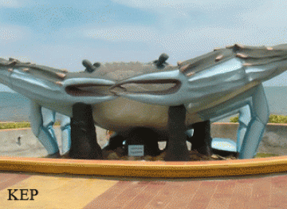

- Siem Reap
- Pailin
- Battambang
- Pursat
- Banteay Meanchey
- Oddar Meanchey
- Preah Vihear
- Kampong Thom
- Kampong Chhnang
- Kampong Cham
- Stung Treng
- Ratanakiri
- Mondulkiri
- Kratie
- Tbongkhmum
- Preyveng
- Svay Rieng
- Kandal
- Phnom Penh
- Takeo
- Kampong Speu
- Kampot
- Kep
- Preah Sihanouk
- koh kong


Kep Travel Guides
General Information
Kep City is a municipality in Cambodia with the status of a province. Kep is just a few kilometres from the border with Vietnam located and used to be Cambodia's most popular beach town but has fallen on hard times in recent years (especially due to the Khmer Rouge). Many of Kep's, mostly French villas are abandoned, but some of the town's former splendour is still apparent.
The see is lined with huge sidewalks and some large statues that now seem largely out of place. The king built a palace overlooking the Gulf of Thailand, but it was never furnished and now sits empty. A good, paved road connects the small town with the 15km far away Kampot. The slightly darker beaches than in Sihanoukville are mostly scattered with mangroves and black rocks, but Koh Thonsay (Rabbit Island) is just a short boat ride away (approx. 1/2h).
Kep appears to be experiencing something of a renaissance, with several mid-range and luxury guesthouses and bungalows recently opened or still under construction. The seafood is cheap, plentiful and delicious - particularly the quite famous crabs. Kep is also home to an extensive national park covering some mountains with deep green jungle.
The French established Kep City during the colonial time in 1908. Today Kep is mainly popular to the domestic tourists, who choose Kep as their holiday destination. What's more, Kep offers great seafood and magnificent views of the mountains and the beaches.
Taking a boat to the nearby islands is also a breathtaking experience. Another itinerary, which must not be missed, is an excursion to the serene waterfalls of 'Tuk Chhou" situated about 10 km from Kampot. Kep City is located in the Southwest of Phnom Penh. The city is accessible by the National Road No 3 from Phnom Penh via Kampot province (173 km) or by the National Road No 2 from Phnom Penh via Takeo province.
Especially during the Sixties, during the time of Sang Kum Reas Ni Yum the city was developed as a beautiful seaside tourist resort for the rich and government. The story related to the name of Kep said that there was a king named Sa Kor Reach, who had a mighty spell. He put a sleeping spell on a commander at AngKor Thum, than stole the commander's white horse and fled together with his troop to the Southwestern seaside.
When he took a rest at the seaside, he was overhauled by the commander's troops, who chased him from behind. Suddenly, he got on the horseback; the horse reared, and made him fall down on the ground together with the saddle. Then, he got on the horseback again and fled away without picking up the saddle, because the commander's troops almost approached him. So that's why this area was called ' Kep Seh ' meaning ' the saddle ', nowadays it's only called ' Kep '.

Geography
Kep City municipality is 336 square kilometres big. It's located in the South of the country and is bordering to the North, East and West with Kampot and to the South with the Gulf of Thailand. The province has not so much typical plain wet area like other provinces of Cambodia, as there are some foothills from the Elephant Mountains coming from Kampot province. You can see not so sparse grey limestone hills akin to the Vietnamese ones. Nevertheless there are areas covered with rice fields and other agricultural plantations.
Population
The current population in this municipality is about 40,280 people or 0,3% of the country?s total population (14,363,519 person in Cambodia, 2007, provincial government data), with 20,130 male and 20,150 female. The population density is therefore 119 people per square kilometre
Climate
The country has a tropical climate - warm and humid. In the monsoon season, abundant rain allows for the cultivation of a wide variety of crops. This year-round tropical climate makes Cambodia ideal for developing tourism. Travellers need not to fear natural disasters such as erupting volcanoes or earthquakes, and the country is not directly affected by tropical storms.
Climate: Cambodia can be visited throughout the year. However, those plans to travel extensively by road should be avoided the last two months of the rainy season when some countryside roads may be impassable. The average temperature is about 27 degrees Celsius; the minimum temperature is about 16 degrees. December and January are the coolest months, whereas the hottest is April.
General information about the provincial climate:
- Cool season: November- March (20-26c)
- Hot season: March- May (29c -34c)
- Rainy season: May - October (22-30c, with humidity up to 90%.)
Economy
Beside the profitable fruit cropping such as durian, mango or coconut Kampot Pepper, which is also grown in Kep, has been renowned for decades as one of the best peppers in the world. This pepper has a very distinct flavour and smell, especially when its fresh harvested.
It develops an enthralling aroma, strong, delicate and aromatic. Therefore it is famous in the world and exported to many countries. Kep also tries more and more to focus on the tourist sector, as there is quite a lot of interest by local people and by foreigners, who still can discover Kep and it?s rural countryside as a very natural, remote and docile place being situated on the beautiful costal line of Cambodia.